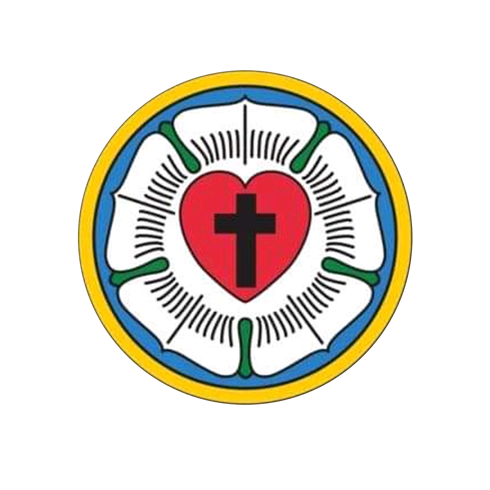
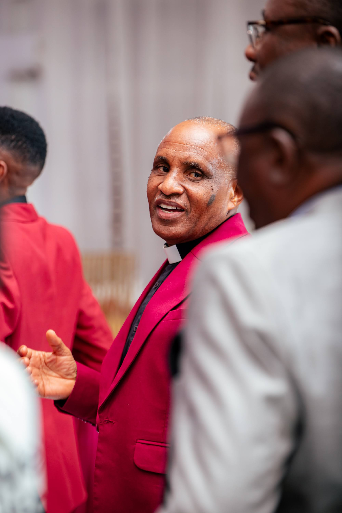

Mchungaji Kiongozi wa KKKT Usharika wa Kisasa, Mchungaji Humaphrey Sam. Anawakaribishwa washarika wote katika Ibada zinazofanyika hapa KKKT Kisasa. Kanisamlinapatikana Kisasa, Dodoma.
Mchungaji Kiongozi wa KKKT Usharika wa Kisasa, Mchungaji Humaphrey Sam. Anawakaribishwa washarika wote katika Ibada zinazofanyika hapa KKKT Kisasa. Kanisamlinapatikana Kisasa, Dodoma.
jnnjnjdnjcndjcndjcndj